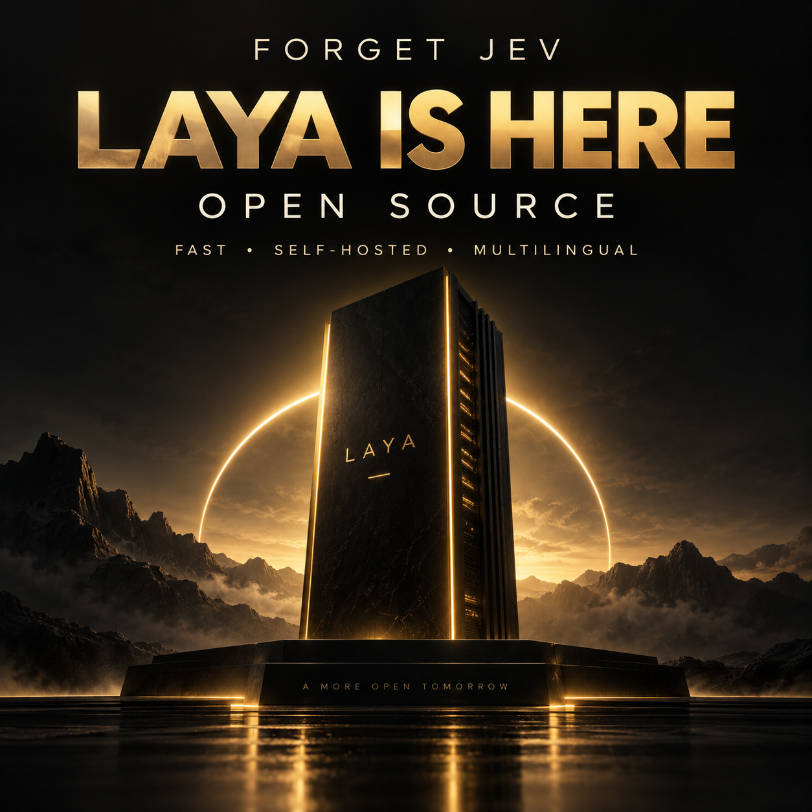

Ejecuta Laya en tu máquina. Clasifica tickets en portugués, revisa las señales y deriva los casos para revisión.

Un fork del Laya oficial con una aplicación pequeña y verificable. El modelo sugiere; la persona confirma.
Departamento, urgencia, amenaza de cancelación y solicitud de reembolso con el checkpoint multilingual.
Elige el navegador para probarlo o usa JSON para integrarlo en un proceso local.
16 tickets sintéticos, métricas y predicciones registradas. Los errores también forman parte de la entrega.
La entrada se valida antes de la inferencia. La aplicación rechaza el texto que perdería tokens y mantiene la revisión humana en todas las respuestas.
Se recomienda Python 3.10+ (probado con 3.12), Git, espacio para los pesos e internet en la primera carga. La GPU es opcional; la CPU es la opción predeterminada.
Usa un entorno virtual. Si optas por GPU, instala una versión de PyTorch compatible con tu hardware.
# comando
python3 --version
git --versionComandos para Linux/macOS. En Windows, activa el entorno con .venv\Scripts\activate. El sitio publicado es la guía; la inferencia ocurre en el servidor local.
El clon conserva el SDK oficial y agrega la carpeta practical.
git clone https://github.com/inematds/laya.git cd laya python3 -m venv .venv source .venv/bin/activate python3 -m pip install -e . -r practical/requirements.txt
Descarga y carga solo multilingual. La primera ejecución tarda más.
python3 -m practical download
La salida es JSON. No se ejecuta ninguna acción externa.
python3 -m practical triage \ --message "Fui cobrado duas vezes. Quero o reembolso."
Abre http://127.0.0.1:8765 en el navegador de la misma máquina. ¿El puerto está ocupado? Usa --port 8875.
python3 -m practical serve --port 8765 # GPU opcional: --device vem antes do subcomando python3 -m practical --device cuda serve --port 8875
HTTP 422 indica una entrada no válida; 503 indica que el modelo no está disponible. Usa la predicción solo después de HTTP 200.
curl -X POST http://127.0.0.1:8765/api/triage \
-H "Content-Type: application/json" \
-d '{"message":"Quero contratar o plano empresarial."}'Compara la salida con las etiquetas esperadas y conserva las condiciones de la prueba.
python3 -m practical --device cuda evaluate --output avaliacao.json python3 -m unittest discover -s tests/practical -v
NVIDIA GB10, checkpoint multilingual, cuatro preguntas por mensaje. Muestra didáctica pequeña: no es una validación para producción.
81,25% de precisión, frente a una línea base mayoritaria del 25%. Brier multiclase: 0,30835; ECE en diez intervalos: 0,17988.
La compra de 20 licencias se derivó al área financiera. La predicción del tiempo y el mensaje enviado por error se derivaron a soporte técnico.
El resultado muestra por qué la política mantiene la revisión humana, incluso ante predicciones confiadas.
La confianza de choice en el SDK mide la concentración de la distribución, no garantiza un acierto. En este esquema, churn es una amenaza explícita en el texto. Ninguna de estas salidas autoriza un reembolso ni una cancelación.
Los próximos pasos dependen de datos propios y criterios de operación. Esta entrega no incluye entrenamiento automático.